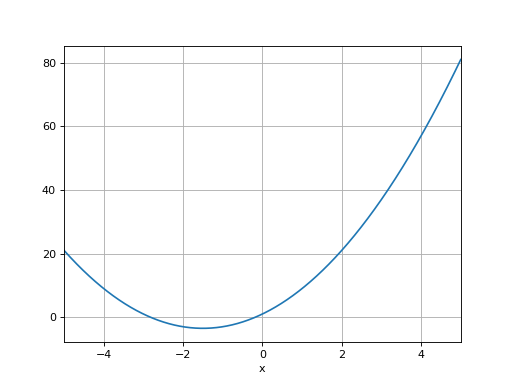

Equations du Second Degré¶
Modèle Mathématique¶
Un polynôme du second degré peut s’écrire sous la forme
\[p(x) = ax^2+bx+c\]
Exemple¶
import numpy as np
import matplotlib.pyplot as plt
a,b,c = 2,6,1
x = np.arange(-5,5,0.001)
p_x = a*(x**2)+b*x+c
# plot figure
plt.plot(x,p_x)
plt.grid()
plt.xlim([-5,5])
plt.xlabel("x")

Expression des racines¶
Les racines de \(p(x)\) sont les valeurs de \(x\) pour lesquelles
\[p(x)=ax^2+bx+c=0\]
Les racines peuvent s’obtenir par identification avec la forme factorisée suivante
\[p(x) &= a(x-x_1)(x - x_2)
&=ax^2 - a(x_2 + x_1) +ax_1x_2\]
En particulier, nous
Un polynôme de degré 2 possèdent 2 racines notées \(x_1\). L’expression de ces 2 racines dépend de la valeur du discriminant
\[\Delta = b^2-4ac\]
\(\Delta > 0\) : Le polynôme possède deux racines réelles
\[\begin{split}x_{1,2} = \frac{-b\pm \sqrt{\Delta}}{2a}\\\end{split}\]
\(\Delta = 0\) : Le polynôme possède une racine double
\[x_1 = x_2 = -\frac{b}{2a}\]
\(\Delta < 0\) : Le polynôme possède deux racines complexes-conjuguées
\[\begin{split}x_{1,2} = \frac{-b\pm j\sqrt{|\Delta|}}{2a}\\\end{split}\]